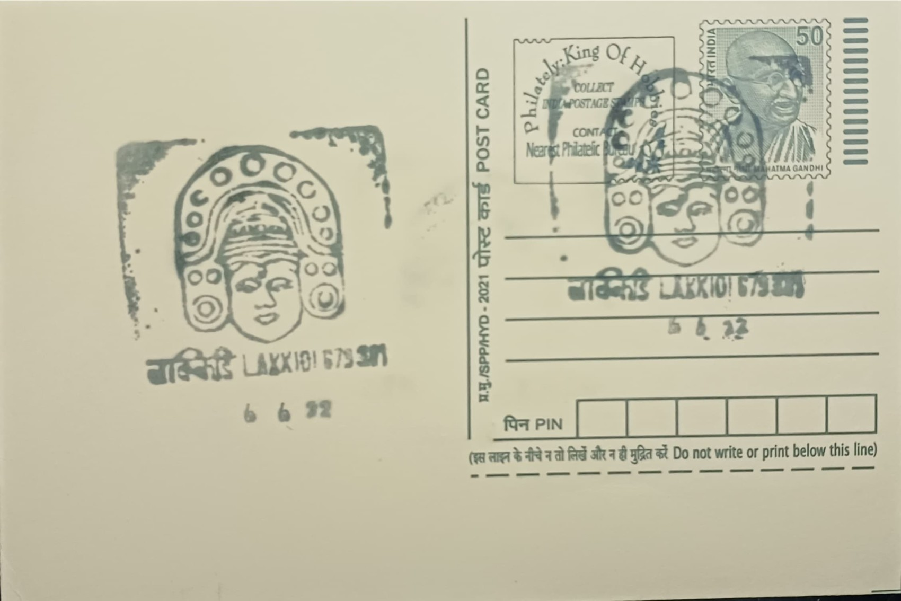

Head Gear of Ottanthullal
ഒറ്റൻതുള്ളലിന്റെ തലയങ്കി


Ottanthullal, among the liveliest of Kerala's solo performing-narrative traditions, owes its creation to the eighteenth-century Malayalam poet Kunchan Nambiar, counted among the Prachina Kavithrayam, the trio of classical Malayalam poets. Tradition holds that Nambiar, while accompanying a Chakyar Koothu performance on the mizhavu drum at Ambalappuzha, dozed off and was publicly mocked by the presiding chakyar; stung by the humiliation, he is said to have composed and staged the first Thullal performance the very next night, fashioning a form built on swift verse, physical comedy and open social critique that common audiences, long excluded from the Sanskritised temple arts, could immediately follow and enjoy.
As a genre, Thullal is conventionally divided into three related forms, Ottan, Seethankan and Parayan, distinguished from one another by costume, rhythm and the metre of their recited verse, with Ottanthullal recognised as by far the most widely practised and popular of the three. Its significance lies less in ritual sanctity than in its role as a vehicle of literary and social commentary: performed in Malayalam rather than Sanskrit or Manipravalam, it carried pointed observations on caste privilege, priestly hypocrisy and the conduct of the powerful directly to ordinary temple audiences, giving it a lasting place in Kerala's literary and performing-arts history alongside more classical forms such as Koothu and Kathakali.
The headgear, or mudi, worn by the Ottanthullal performer is constructed chiefly from light, locally available materials, the wood of the areca nut palm and bamboo forming its frame, with additional ornamentation carved from coconut and areca wood and finished in bright lacquer-like colour. It is tall, crown-like and conical in profile, designed to catch light and draw the eye as the solo performer moves rapidly across the performance space, and is worn together with a heavily painted face, green-dominant makeup highlighted with white, red and black at the brows, eyes and lips, a beaded and tinselled chest plate, a flared red-and-white waist skirt, and carved wooden shoulder and wrist ornaments, the entire ensemble visibly drawing on the sculptural idiom of Kerala's temple art.
A distinguishing feature of the Ottan costume is precisely this emphasis on visual spectacle suited to motion rather than stillness: unlike the restrained, seated recitation of Chakyar Koothu that Ottanthullal was devised to answer, the performer sings, narrates and dances simultaneously to the beat of the mridangam and ilathalam, and the headgear and skirt are deliberately built to flare and catch the light with every turn and jump, reinforcing the satirical energy of the verses being delivered. Over time, Nambiar is credited with composing a substantial body of Thullal texts, often performed at temple festivals and annual celebrations across Kerala, with the headgear and costume today also serving as a readily identifiable emblem of the art form in textbooks, tourism material and classical-arts documentation.
The art form's association with the Palakkad region is anchored by the Kunchan Nambiar Smarakam at Lakkidi, a memorial established in 1976 by the Government of Kerala at the poet's ancestral Kalakkathu house in Killikkurissimangalam, which today houses a museum displaying traditional Thullal costumes, headgear and performance paraphernalia alongside a library and an open-air stage used for live recitals; the centre also confers an annual Kunchan Award on a senior Thullal artist and marks Kunchan Day every May. Training in Ottanthullal, including the making and wearing of its distinctive mudi, continues at the memorial and at institutions elsewhere in Kerala, keeping the costume's craft techniques in active practice rather than confined to museum display alone.
| Date of Introduction | October 15, 1997 |
|---|---|
| Address | Sub Postmaster, |
| Lakkidi SO, | |
| Palakkad (dt.), Kerala - 679301. |